Beginner, automatic, test prep, logbook, refresher and nervous driver coaching — all from one Liverpool branch.
Driving lessons in Liverpool NSW
Every driving lesson service offered from the Liverpool branch.
Beginner lessons. Automatic driving. Test preparation. Logbook hours. Refresher sessions. Nervous driver coaching. Every service starts and ends locally — with pick-up from home or school, structured routes across Liverpool, Casula, Prestons, Chipping Norton, Moorebank and Edmondson Park, and an accredited driving instructor who knows South West Sydney roads in detail.
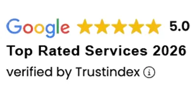
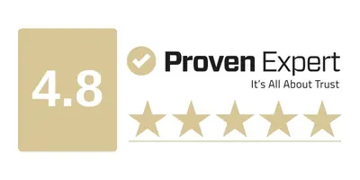
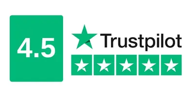
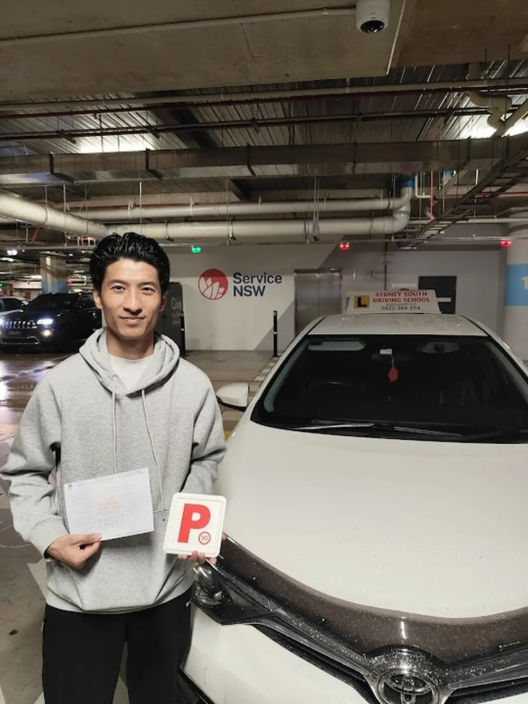
Transport for NSW authorisation, ADTA membership and Roads and Maritime aligned instruction standards.
Every lesson includes local pick-up from home, school or TAFE and drop-off after the session.
All lessons run in fully insured automatic vehicles with instructor dual-control override for safer first sessions.
Current Offers
Perfect for beginners
One Hour Lesson
$80
One hour lesson in an automatic car, including pick-up and drop-off.
Book nowMost popular
Two Hour Lesson
$150
Two hour lesson in an automatic car, including pick-up and drop-off.
Book nowBest value package
10 Hour Package
$700
Ten lesson hours in an automatic car, including pick-up and drop-off for every session.
Buy Package
Liverpool branch
Local instruction designed around the roads your learner will actually drive.
Every lesson at the Liverpool branch is built around South West Sydney conditions — the roundabouts, school zones, merging points and test corridors that local learners encounter in their assessment and in daily driving. That is what makes the instruction specific rather than generic.
Ashraf George, the Liverpool branch instructor, is Transport for NSW authorised, ADTA qualified, police-checked and holds a Working with Children Check. He teaches beginners on quiet Macquarie Street and Bigge Street residential blocks before introducing Elizabeth Drive, Newbridge Road and the Hume Highway test corridors. The goal is always safer decisions on real Liverpool roads — not just a pass result on a single assessment day.
- Routes matched to the learner's stage and location across South West Sydney.
- Dual-controlled automatic vehicle used for every lesson from day one.
- Credentials are publicly verifiable — Transport for NSW authorisation, ADTA membership, police check and Working with Children Check all current.
Full service range
Six driving lesson services — structured, local and fully covered by one instructor.
Whether you are a first-time learner, a nervous adult, a parent booking for a teenager, or a returning driver adapting to NSW roads — the Liverpool branch has a specific service for your stage. Each card below shows what the service covers, who it is for and what outcomes it is designed to produce.
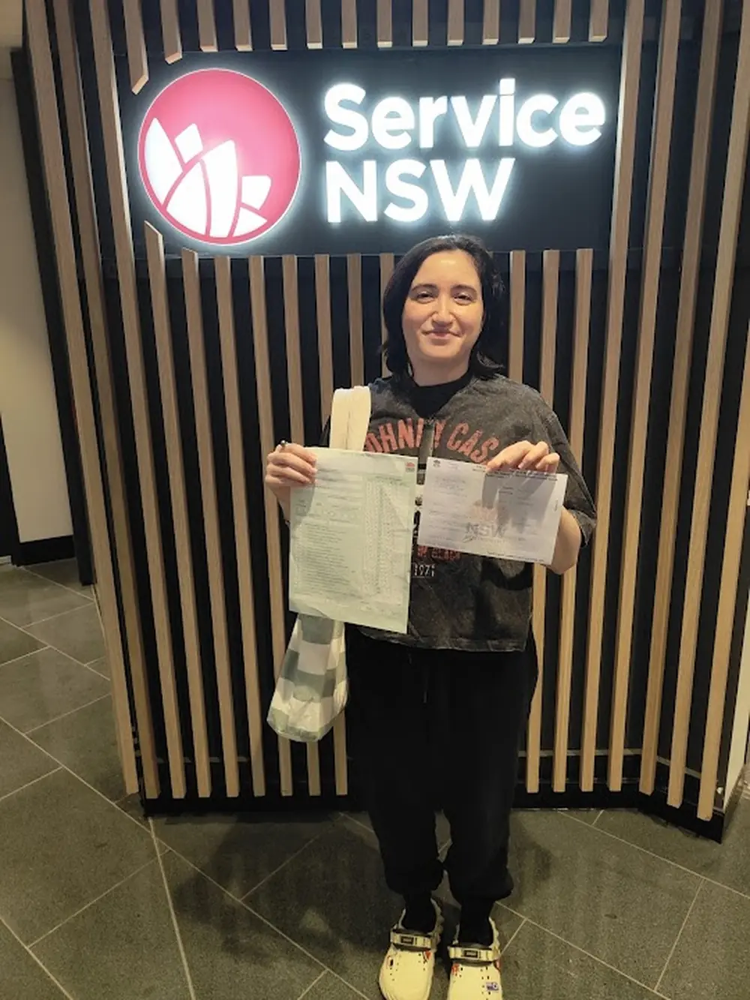
Beginner driving lessons
First lessons are designed for students who have never driven before. The starting focus is on steering control, road positioning, mirror checks, smooth braking and basic vehicle feel on quiet residential streets. Macquarie Street, Bigge Street and the quieter blocks between Liverpool CBD and Casula give beginners the space to build control without traffic pressure. Busy arterial roads like Elizabeth Drive and the Hume Highway are only introduced once the foundational habits are steady and predictable.
Progress is measured by skill readiness — not hours completed. A student who is uncertain about roundabout observation does not move to merging. Every lesson unlocks the next stage when the student is genuinely ready, not when the clock says so.
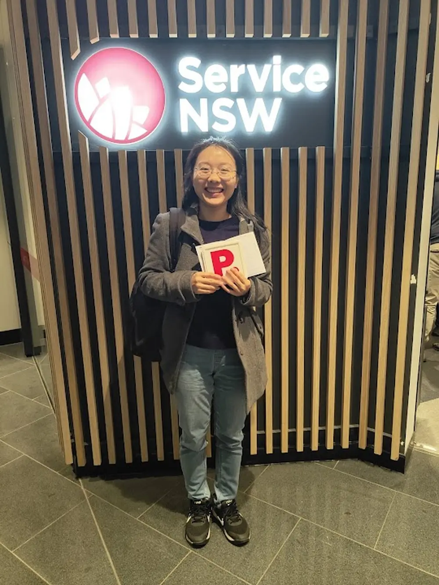
Automatic driving lessons
Automatic lessons remove the manual gear-change layer so students can focus entirely on observation, hazard perception, lane discipline, roundabout timing, gap selection and smoother decision-making from day one. This approach works especially well for beginners who feel overwhelmed when managing a clutch alongside everything else, and for nervous learners who find that the gear-change demand actively interferes with their confidence.
All lessons at the Liverpool branch are conducted in automatic dual-controlled vehicles. Students working toward the NSW learner licence test benefit from automatic instruction because it allows more mental capacity to go toward the skills that are actually assessed — observation, road positioning, hazard awareness and calm test-day control.
Driving test preparation
Pre-test lessons are built around the Liverpool Service NSW Driver Testing Centre on Elizabeth Drive. That means sessions on the Newbridge Road approaches from Moorebank, the Hume Highway north from Casula, the Orange Grove Road local circuit, school-zone timing on Epsom Road and the kerbside stops and roundabout sequences that appear in the actual assessment. Students from Chipping Norton work the Moorebank Avenue and Newbridge Road corridors that connect to the test centre.
Preparation also covers observation checkpoints, mirror-signal-manoeuvre routines, intersection priority rules, three-point turns and reverse parking. Mock test sessions can be added for students who want a full dress rehearsal at test-day pace before their Service NSW appointment. Car hire for the test day can be booked as a package.
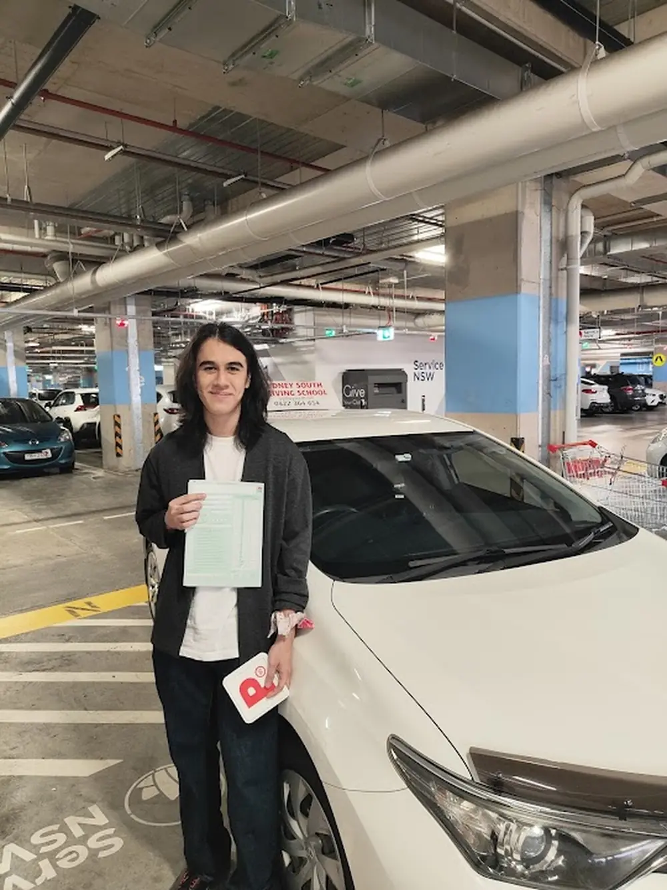
Logbook hours
NSW learner drivers must complete 120 supervised driving hours before sitting the licence test. Every professional lesson hour counts toward that total in full. Sessions across Liverpool, Casula, Moorebank, Prestons, Chipping Norton and Edmondson Park are built around the actual skills the learner needs to develop — residential observation, arterial road merging, roundabout timing, parking confidence and safe positioning — rather than passive hours behind the wheel.
Families who want to combine professional lessons with supervised private practice get the most efficient path to 120 hours. Students who practise between sessions with a licensed supervising driver progress faster and arrive at test-ready skill sooner.
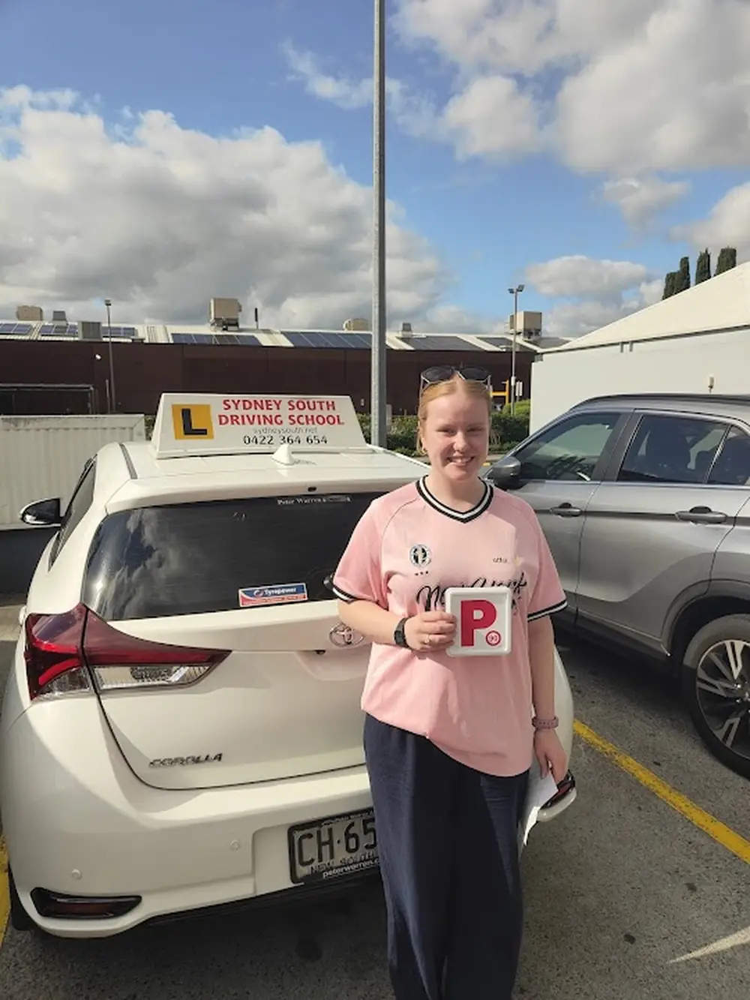
Refresher lessons
Refresher lessons support three groups of drivers: adults who have been off the road for years and need to rebuild practical confidence, international licence holders who need to adapt to NSW road rules and South West Sydney traffic conditions, and experienced drivers who have developed specific bad habits — following too close, missing observation checks, cutting roundabouts or struggling with particular manoeuvres like kerbside parking.
The lesson plan is built around what the individual actually needs. A driver from Fairfield or Cabramatta who has been driving overseas for five years needs different support than a Liverpool resident who has not driven since a minor collision. The starting point for a refresher lesson is always a short assessment so the session focuses where it matters.
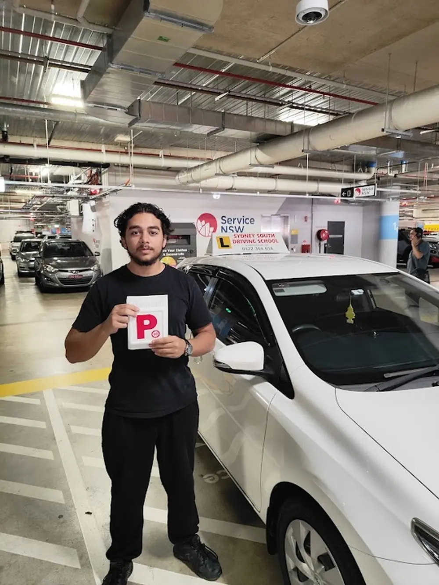
Nervous driver lessons
Anxious learners need a different kind of lesson structure. Pressure and urgency make anxiety worse. Calm repetition on predictable streets makes it better. Nervous driver sessions at the Liverpool branch start on the quietest residential blocks available — away from school-zone rush, busy intersections and arterial road volume — and introduce complexity in small increments only when the student has genuine confidence in the current stage.
Key manoeuvres that cause anxiety — reverse parking, three-point turns, roundabout entry, left-turn lane discipline — are broken down into small, named steps and practised repeatedly until the routine feels natural and automatic. Students who struggle with observation pressure, mirror timing or test-day nerves benefit especially from this approach. Many nervous learners go on to achieve their P-plates having started with no confidence at all.
Lesson pricing
Transparent lesson pricing with no hidden costs.
All prices include local pick-up and drop-off. No travel fees. No booking fees. Packages save you money compared to booking individual sessions and count fully toward the NSW 120-hour logbook requirement.
Perfect for beginners
$80One Hour Lesson
One hour lesson in an automatic dual-controlled vehicle, including local pick-up and drop-off.
- Automatic vehicle with dual controls
- Pick-up and drop-off included
- Counts toward 120-hour logbook
Most popular
$150Two Hour Lesson
Two hour lesson in an automatic dual-controlled vehicle, including local pick-up and drop-off.
- Automatic vehicle with dual controls
- Pick-up and drop-off included
- Counts toward 120-hour logbook
Save $30
$3705 Hour Lessons Package
Five hour lessons package in an automatic car, including local pick-up and drop-off for every session.
- 5 hours total, flexible scheduling
- Pick-up and drop-off every session
- All 5 hours count toward logbook
Best value
$70010 Hour Lessons Package
Ten hour lessons package in an automatic car, including local pick-up and drop-off for every session.
- 10 hours total, flexible scheduling
- Pick-up and drop-off every session
- All 10 hours count toward logbook
Lessons plus test day
$7708 Hours + Test Day Lesson + Car Hire
Eight hour lessons, one pre-test lesson on test day and car hire for the Service NSW driving test.
- 8 lesson hours + 1-hour test warm-up
- Car hire for test day included
- Liverpool test centre coverage
Test-ready package
$220Car Hire Package
One pre-test hour lesson followed by car hire for the Service NSW driving test on the same day.
- 1 warm-up lesson on test day
- Car hire for the driving test
- Liverpool test centre route warm-up
Flexible payments
$71010 Hour Instalment Plan
The $700 ten-hour lesson package paid by instalments, including the published $10 administration fee.
- Ten lesson hours
- Paid by instalments
- Includes the $10 administration fee
Real feedback videos
Watch real learner feedback.
These are real Liverpool learner drivers talking about what changed when they stopped struggling with lessons and started building genuine road confidence.

Local routes and test centres
Why local instruction on South West Sydney roads produces better test results.
Generic instruction teaches principles. Local instruction teaches those principles on the exact roads, intersections and test corridors that students will face during their actual assessment and in day-to-day Liverpool driving. These are not the same thing.
The Liverpool Service NSW Driver Testing Centre is on Elizabeth Drive. Students from Moorebank approach via Newbridge Road. Students from Casula use the Hume Highway north. Students from Chipping Norton use the Moorebank Avenue and Newbridge Road corridors. Pre-test preparation lessons are built around every one of those approach routes, the roundabout sequences that appear in the assessment and the observation checkpoints that the examiner watches.
- Elizabeth Drive, Newbridge Road, Orange Grove Road and Hume Highway all included in test preparation lessons.
- School-zone timing, kerbside stops and local intersection priority covered before test day.
- Students who have driven the test routes before arrive calmer and perform better.
Test centres covered
Three Service NSW driving test locations — all prepared for in local lessons.
Liverpool Service NSW Driver Testing Centre
Elizabeth Drive, Liverpool. The primary test centre for Liverpool, Casula, Moorebank, Prestons and Chipping Norton students. Test prep lessons cover the full Elizabeth Drive corridor, Orange Grove Road circuits, Newbridge Road roundabouts and all key observation checkpoints.
Edmondson Park Service NSW Driver Testing Centre
Serves students across Edmondson Park, Prestons, Horningsea Park, Denham Court and Leppington. Local approach routes, Campbelltown Road corridor and Edmondson Park roundabout sequences covered in pre-test preparation.
Macquarie Fields Service NSW Driver Testing Centre
Serving Macquarie Fields, Glenfield and Ingleburn students. Campbelltown Road and Bringelly Road corridors covered, alongside local roundabout sequences and the residential street observation checks used in the assessment.
Liverpool local road practice
Lessons across Macquarie Street, Bigge Street, Moore Street, Bathurst Street, Hoxton Park Road and Moorebank Avenue for residential confidence building before any test-area driving is introduced.
Purposeful driving approach
Cleaner habits, calmer lessons and less wasted time on the road.
Safe driving instruction and responsible driving habits point in the same direction. Smooth control, purposeful route planning, calm decision-making and proper following distances all reduce fuel use, lower mechanical wear and make driving less stressful for everyone. These habits are taught from the first session — not as a bonus, but as part of what makes a competent, independent driver.
Purposeful route planning
Each lesson is planned around the skills the learner actually needs to practise at their current stage. Time spent on relevant streets — Elizabeth Drive approaches, local residential circuits, roundabout sequences used in the test — is more useful than passive kilometres. No lesson hour should leave a student unsure about what they just practised or why.
Smooth vehicle control
Steady braking, measured acceleration and proper following distance do not just improve safety — they reduce fuel use and the stop-start stress that makes new drivers more anxious. Smooth control is a first-lesson habit because it underpins every other skill. A student who brakes calmly and accelerates steadily is also easier to observe and correct.
Efficient lesson structure
Clear pre-drive briefings reduce confusion and wasted driving time. Students who understand the skill goal before the car starts learn faster and use lesson time more effectively. A well-briefed five-minute manoeuvre practised three times correctly produces better outcomes than thirty minutes of vague driving with no clear target.
Respect for shared road space
Learners are taught to treat other road users, pedestrians, cyclists and shared infrastructure with care. Pedestrian priority, safe following distances, patience at merges and awareness of school-zone timing are standard lesson content — not extras. These habits make driving more sustainable and safer for everyone using South West Sydney roads long after the test is over.
Credentials and trust
Everything you need to verify before booking your first lesson.
Placing a learner — often a teenager or a nervous adult — in a vehicle with someone you have not met before requires a baseline of trust. The credentials that support that trust are publicly verifiable, not self-reported.
Transport for NSW authorisation means the instruction meets the standard required by the NSW Government. ADTA membership means professional conduct standards apply. A current National Police Check and Working with Children Check provide background verification. Every one of these can be confirmed before you make a booking.
- Transport for NSW authorised instruction meeting government-set standards.
- ADTA member with professional code of practice covering safety and lesson quality.
- National Police Check and Working with Children Check — both current and verifiable.
Our accreditation and memberships
Trusted teaching standards and recognised learner-driver credentials.
Every credential below is publicly verifiable. Families and learners can confirm accreditation status, background check completion and professional membership before booking.
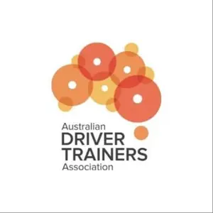
Australian Driver Trainers Association
ADTA professional membership confirming industry standards and adherence to a code of practice covering student safety, lesson quality and professional conduct.
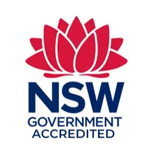
NSW Government Accredited
NSW Government accreditation confirming compliance with Transport for NSW driving instruction standards required to operate as an approved driving instructor.
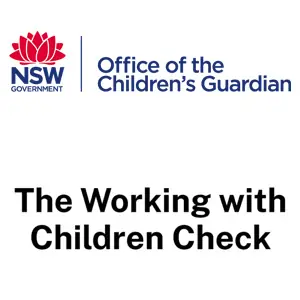
Working with Children Check
Current NSW Office of the Children's Guardian clearance. Required for instructors teaching younger learners and a standard expectation for family bookings.
Transport for NSW
Transport for NSW authorisation reflecting current NSW road rules, learner-driver licence standards and the regulated requirements for authorised driving instruction.
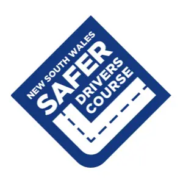
NSW Safer Drivers Course
Official Safer Drivers Course provider. A Transport for NSW programme helping learners under 25 develop hazard awareness and lower-risk decision-making before sitting their licence test.
National Police Check
NSW Police Force National Police Check completed. Background screening that gives additional reassurance for students and parents, especially for first lessons with a new instructor.
Who we teach
Support for beginners, nervous learners, adult returners and test-ready students.
The Liverpool branch works with learners at very different stages and the lesson approach is adjusted to fit the person — not a fixed programme. The same instructor teaches a 16-year-old on their first drive and a 45-year-old refreshing after years off the road.
First-time learners
Steering control, mirror checks, smooth braking, road positioning and quiet residential Liverpool streets before any busier traffic is introduced. Structured, stage-by-stage progress.
Nervous drivers
Calm, low-pressure coaching on quiet streets. Repetition on key manoeuvres before roundabouts, merging or arterial roads are introduced. No urgency. No pressure. Clear incremental progress.
Parents and teenagers
Government-accredited, police-checked instruction with a structured lesson plan and local pick-up. A safer framework for logbook hours and Service NSW driving test preparation.
Adult returners
Drivers returning after time away from the road. Rebuilding confidence in Liverpool traffic, roundabouts, school zones and everyday decision-making at their own pace.
International licence holders
Adapting to NSW road rules, local driving expectations, school-zone timing and Service NSW test requirements — for drivers from Fairfield, Cabramatta, Liverpool CBD and surrounding areas.
Pre-test students
Students who need sharper preparation for the Elizabeth Drive test corridor, reverse parking, kerbside stops, observation checks and calm decision-making before their Service NSW booking.
Service area
Liverpool-based lessons across South West Sydney with pick-up included.
Every lesson includes pick-up from home, school or TAFE. The Liverpool branch covers a wide area of South West Sydney — from Fairfield and Cabramatta in the west to Edmondson Park in the south and Milperra and Moorebank in the east. If you are unsure whether your suburb is covered, call or send an enquiry before booking.
Liverpool
CBD, local residential streets and Elizabeth Drive test-area preparation.
Casula
Hume Highway approaches, beginner lessons and local confidence building.
Prestons
Automatic lessons, logbook hours and practical road-readiness.
Chipping Norton
Local route training with clear progression into Liverpool test preparation.
Moorebank
Newbridge Road corridor, merging, observation and roundabout repetition.
Milperra
Suburban road practice, parking confidence and safer local decisions.
Bonnyrigg
Structured learner lessons, calm coaching and local pick-up flexibility.
Edmondson Park
Lessons for beginners, nervous learners and students preparing for the Edmondson Park test centre.
Fairfield
Local route coverage for Fairfield learners within the South West Sydney lesson area.
Cabramatta
Suburb-specific route practice for Cabramatta students building toward their licence.
Cecil Hills
Beginner lessons, refresher sessions and automatic instruction.
Horningsea Park
Pick-up service for local learners near the Edmondson Park test area.
Common questions about our services
Before you book a lesson in Liverpool
These are the questions families and learners ask most often before their first session with the Liverpool branch.
The Liverpool branch offers six services: beginner driving lessons, automatic driving lessons, driving test preparation (including Elizabeth Drive, Edmondson Park and Macquarie Fields test centres), logbook hours, refresher lessons for adult returners and international licence holders, and nervous driver coaching. Car hire for the Service NSW test day can also be booked as a package.
Yes. Every lesson at the Liverpool branch is conducted in a fully insured automatic vehicle with dual controls. The instructor can intervene safely from the passenger seat if needed. This is especially important for first-time learners, nervous drivers and any student who is still developing basic vehicle control.
A single one-hour lesson is $80. A two-hour lesson is $150. The five-hour package is $370 (saving $30). The ten-hour package is $700. The full test-day package including pre-test lesson and car hire is $770. A car hire-only package (one warm-up lesson plus car hire) is $220. All prices include local pick-up and drop-off — there are no separate travel charges. A ten-hour instalment plan is also available at $710, which includes the published $10 administration fee.
Yes. Every lesson includes local pick-up from home, school or TAFE and drop-off after the session. Students across Liverpool, Casula, Prestons, Chipping Norton, Moorebank, Milperra, Bonnyrigg, Edmondson Park, Fairfield and Cabramatta can book without organising separate transport to a training centre.
The primary test centre is the Liverpool Service NSW Driver Testing Centre on Elizabeth Drive. The branch also prepares students for the Edmondson Park Service NSW Driver Testing Centre and the Macquarie Fields Service NSW Driver Testing Centre. Test preparation lessons are built around the specific routes, roundabouts, observation points and school zones used in each assessment.
NSW learner drivers must complete 120 hours of supervised driving before sitting the licence test, including at least 20 hours of night driving. Every professional lesson hour counts toward that total in full. Students who combine regular professional lessons with supervised private practice between sessions reach the 120-hour requirement faster and arrive at the test with a higher skill level than those who rely on private practice alone.
Yes. Ashraf George holds Transport for NSW authorisation, ADTA professional membership, a current NSW Police Force National Police Check and a Working with Children Check through the NSW Office of the Children's Guardian. All credentials are publicly verifiable. Full details are on the about page.
Most beginner students need between 20 and 30 professional lesson hours before they are test-ready, depending on starting experience, how frequently they practise between sessions and how consistently core skills are progressing. Students who practise regularly with a licensed supervising driver between lessons typically reach test readiness faster than those who only drive during professional sessions.
Ready to book a lesson in Liverpool?
Pick the service that fits your stage. Book online in a few minutes. Pick-up is included. The instructor is government accredited, police checked and ready to teach on the roads your learner will actually use.